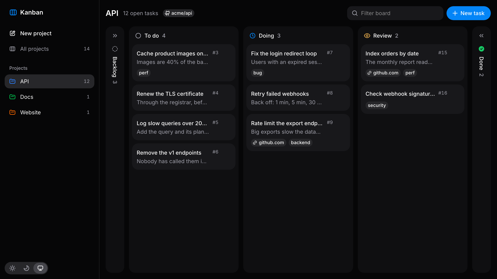
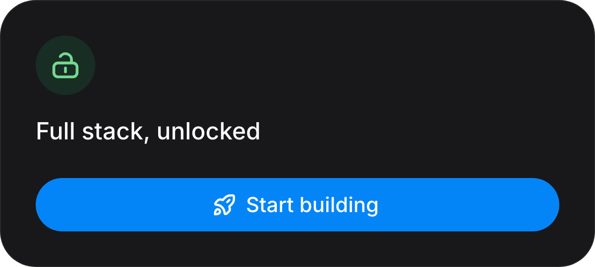

An alternative to TypeScript, with complete bindings to Solid and Kobalte.

let filter, set_filter = S.create_signal "" in let in_column status = Js.Array.filter (in_view ()) ~f:(fun (t : Api.task) -> Status.equal t.status status && matches (S.get filter) t) in <Search_field value=(fun () -> S.get filter) on_change=(S.set set_filter)> <Search_field.Input placeholder="Filter board" /> </Search_field>
let make () = <Modal.Backdrop default_open=true> <Modal.Container> <Modal.Dialog class_="sm:max-w-[400px]"> <Modal.Header> <Modal.Icon class_="bg-success-soft text-success-soft-foreground"> <Gravity.Lock_open class_="size-5" /> </Modal.Icon> <Modal.Heading>"Full stack, unlocked"</Modal.Heading> </Modal.Header> <Modal.Footer> <Button class_="w-full" slot=`close> <Gravity.Rocket /> "Start building" </Button> </Modal.Footer> </Modal.Dialog> </Modal.Container> </Modal.Backdrop>
